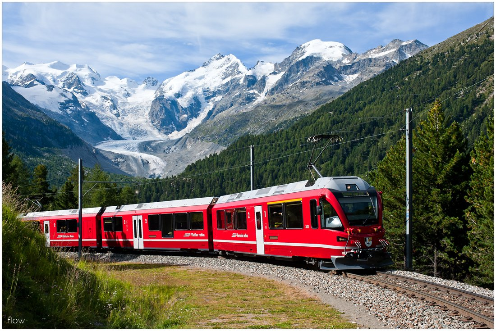
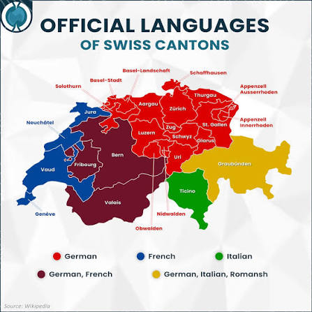
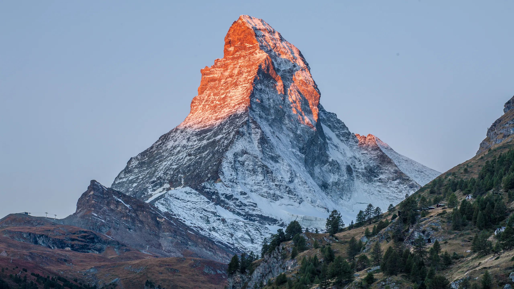
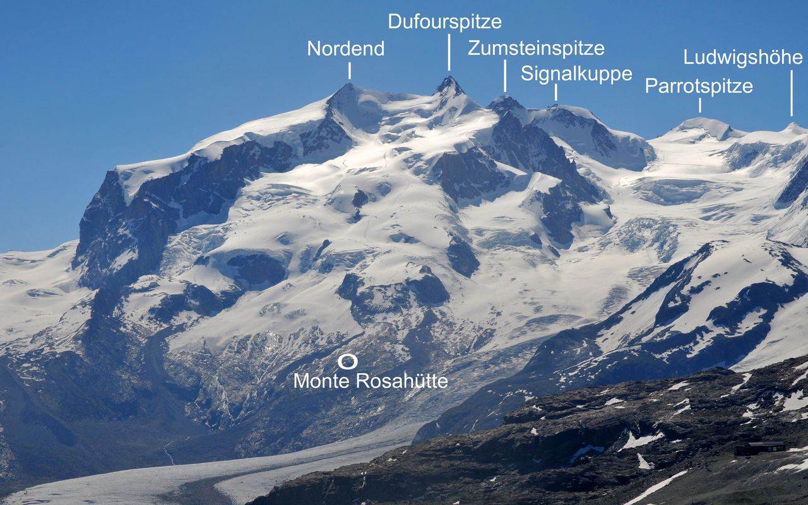
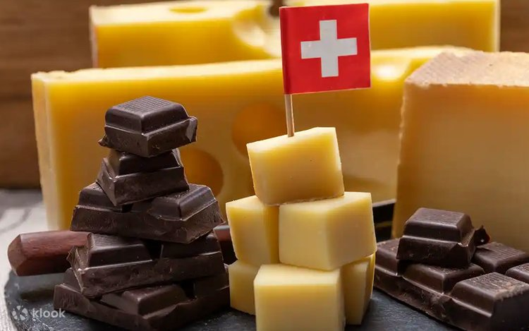

Svájc híres a jól megszervezett vasúti rendszeréről.
A vonatok, buszok és más közlekedési eszközök összehangolt menetrend szerint működnek.
A pontosság és a megbízhatóság fontos része a svájci közlekedési kultúrának.
A vasút a hegyvidéki területeket is összeköti, ezért sok helyre vonattal is könnyű eljutni.
A svájci óragyártás hagyománya több mint 400 éves, és nemzetközileg már a 17. század óta ismert.
2025-ben 14,6 millió svájci órát exportáltak, összesen 24,4 milliárd svájci frank értékben.
A legismertebb svájci óramárkák közé tartozik a:

| Nyelv | A lakosság aránya |
|---|---|
| 🇩🇪 Német | kb. 62% |
| 🇫🇷 Francia | kb. 23% |
| 🇮🇹 Olasz | kb. 8% |
| Rétoromán | kb. 0,5% |
Svájc területének jelentős részét az Alpok borítják. Emiatt nagyon sok a hegy, völgy, tó és síterep.
A hegyvidéki táj fontos része a svájci turizmusnak és kultúrának.
A Matterhorn (4478 méter) az ország egyik legismertebb természeti látványossága. Svájc legmagasabb hegye: A Monte Rosa tömbjében található Dufourspitze, amely 4634 méter magas.
 |
 |
Svájc különösen híres a csokoládéjáról és sajtjairól. Jellegzetes sajtok például az Emmentaler, Appenzelle és a Gruyère.
A svájci csokoládégyártásban fontos szerepet játszott a tejcsokoládé és a modern csokoládékészítési technikák fejlődése.
Ismert csokoládémárkák a: Milka, Toblerone és a Lindt
A selymes csoki titka egy „hibának” köszönhető: Rodolphe Lindt 1879-ben véletlenül bekapcsolva felejtette a csokoládégyúró gépet az egész hétvégére. Hétfőre a kemény massza helyett a világ első selymesen olvadó, krémes csokoládéja várta, forradalmasítva az iparágat.
